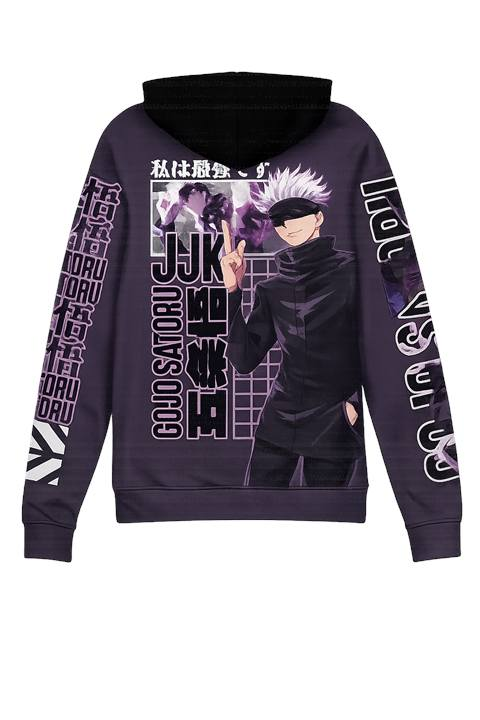
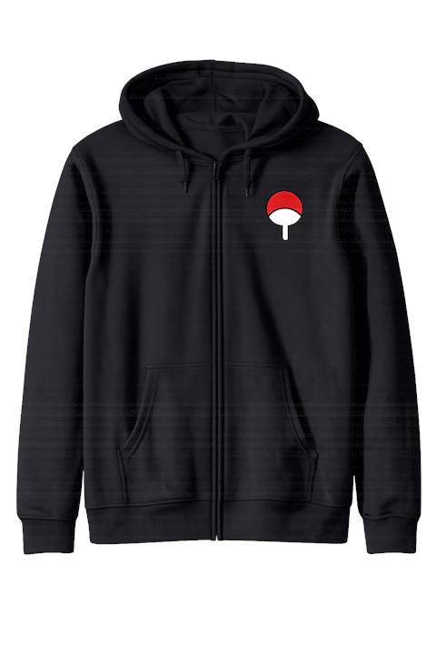
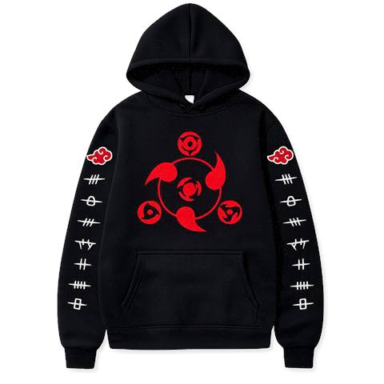

Best Anime Oversized T-Shirts in Nepal 2026
Looking for the best anime oversized t shirt Nepal has to offer? Discover why these trendy, comfortable, and custom-printed tees are the top streetwear choice for Gen Z and anime fans in Nepal this year.
Why Anime Streetwear Is Trending in Nepal
Anime culture is booming in Nepal, with oversized t shirts and anime hoodies becoming must-haves for youth, students, and streetwear lovers. Social media, K-pop, and global pop culture have made anime fashion a staple for anyone wanting to stand out and express their fandom.
Top Oversized Anime T-Shirt Styles for 2026
Dark Fantasy Anime Designs
Black-and-red manga graphics are dominating streetwear Nepal trends. Perfect for casual outfits, layered looks, and anime conventions.

Minimal Manga Panel T-Shirts
Clean, stylish manga panel tees are ideal for everyday wear and minimal streetwear outfits.

Oversized Back Print Anime Tees
Large back-print anime t-shirts are a huge hit for their premium look and modern silhouette.

Anime-Inspired Jerseys
Anime sports jerseys blend bold graphics with athletic streetwear. Lightweight, comfortable, and perfect for fans.

Why Choose AR Clothing Zone for Anime T-Shirts
- Premium quality printing for sharp, long-lasting artwork
- Trendy oversized fits for streetwear styling and comfort
- Custom anime t shirt printing Nepal – create your own design!
- Fast delivery across Kathmandu, Pokhara, Biratnagar, Chitwan, Butwal, and more
- Trusted by youth and anime fans nationwide
Custom T Shirt Printing Nepal – How It Works
- Choose your favorite anime design or upload your own artwork
- Select size, color, and fit
- Place your order online or via WhatsApp
- Get fast, secure delivery anywhere in Nepal
Learn more about custom t shirt printing Nepal
How to Style Your Anime Oversized T-Shirts
- Pair with cargo pants, sneakers, and chains for a streetwear Nepal vibe
- Layer with hoodies or jackets for urban fits
- Go minimal with monochrome manga tees and neutral outfits

Customer Reviews & Testimonials
“The best anime t shirt Nepal has! Super comfy and the print quality is amazing.” – Suman, Kathmandu
“Fast delivery and awesome custom t shirt printing Nepal service. Highly recommend!” – Priya, Pokhara
Frequently Asked Questions (FAQ)
- How do I order a custom anime t-shirt in Nepal?
- Visit our shop or contact us on WhatsApp for easy ordering.
- What payment methods are accepted?
- We accept eSewa, Khalti, bank transfer, and Cash on Delivery.
- How do I care for my printed anime t-shirt?
- Wash inside out in cold water, avoid bleach, and hang dry for best results.
- Can I return or exchange my order?
- Yes, see our return policy or contact us for help.
- Are oversized anime t-shirts trending in Nepal?
- Absolutely! Oversized anime streetwear is a top trend for Gen Z and students in Nepal.
Order Now – Limited Stock!
Ready to upgrade your style? Shop the latest anime oversized t-shirts in Nepal now—limited stock, fast delivery, and secure checkout!
Internal Links
External Authority Links
Media & SEO Tips
- All images are WebP and under 100KB for fast loading
- ALT text includes primary and secondary keywords
- Mobile responsive and HTTPS secure
- Product, FAQ, and Article schema recommended
- Google Analytics tracking enabled
About the Author
Written by the AR Clothing Zone team – Nepal’s trusted experts in custom anime streetwear, with years of experience serving Gen Z and fashion-forward youth nationwide.